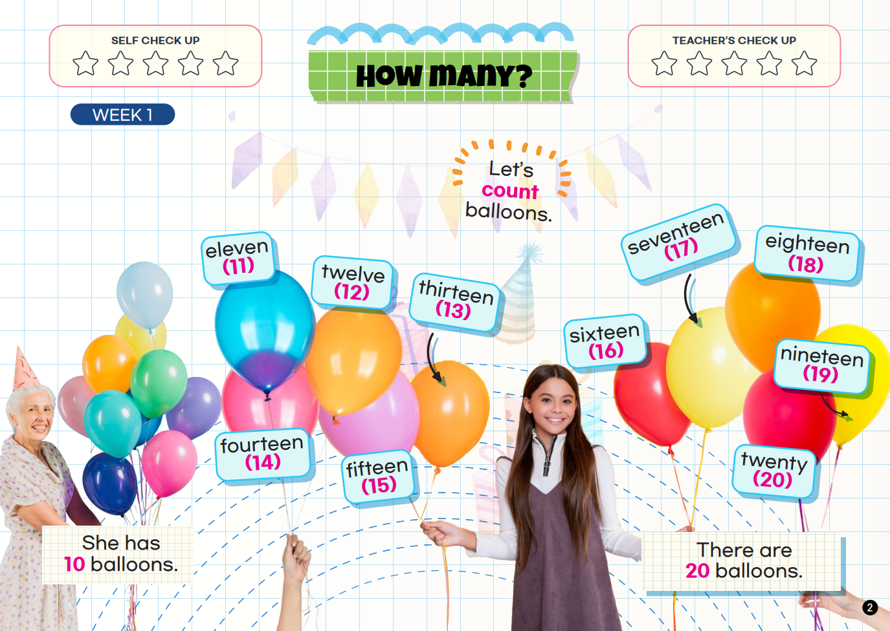
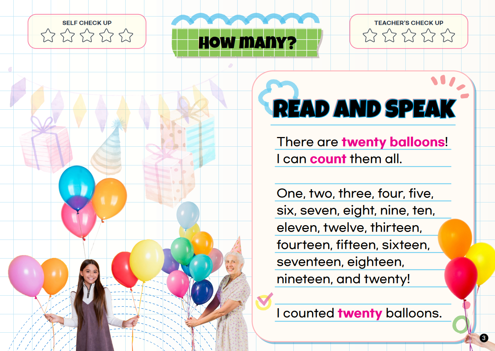
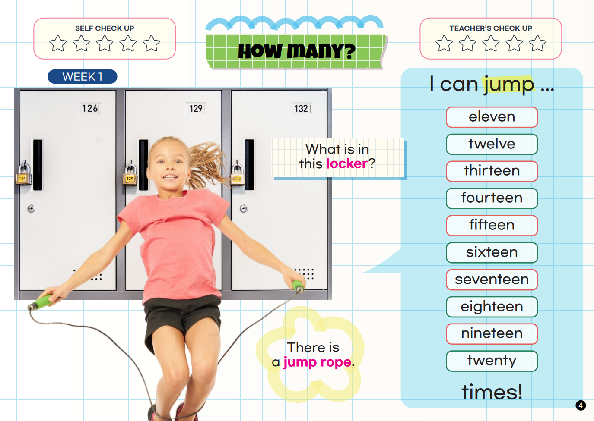
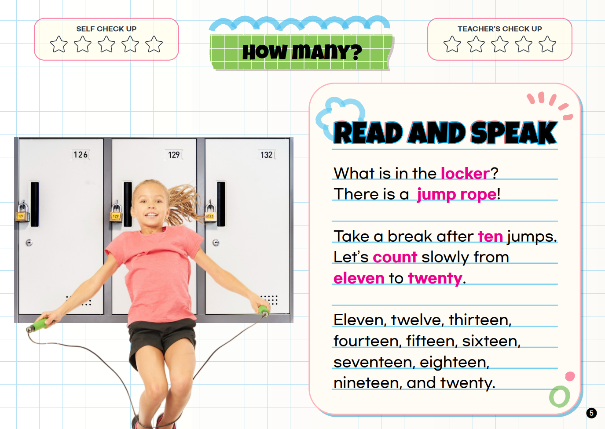

WEEK 1
How Many?
Count and say the numbers from eleven to twenty.
Speak It!
“There are twenty balloons. I can count them all.”
eleventwelvethirteenfourteenfifteensixteenseventeeneighteennineteentwenty



